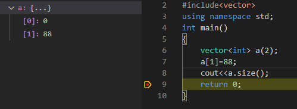
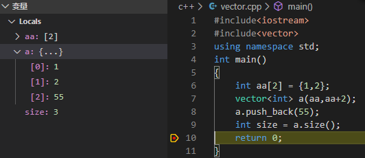
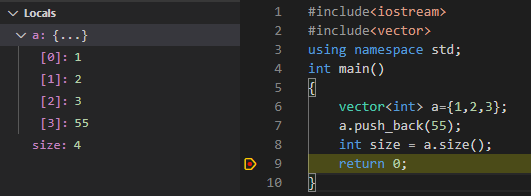
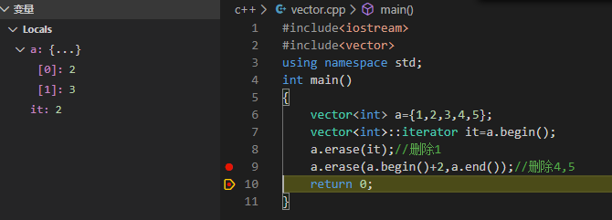
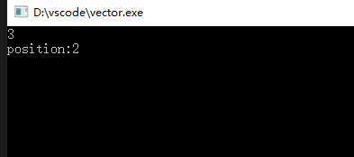

1.初始化
首先，我们来看一下vector初始化的几种方法，以及对这几种初始化下的容量大小分析：
（1） 无参初始化
#include<iostream>
#include<vector>
using namespace std;
int main()
{
vector<int> a;
cout<<a.size();
return 0;
}这种初始方法最为简便，容器容量随着元素的增多而增多；
（2） 带有容量参数的初始化
#include<iostream>
#include<vector>
using namespace std;
int main()
{
vector<int> a(2);
a.push_back(1);
cout<<a.size();
return 0;
}在未push_back前输出结果是2,插入一个元素后输出结果变为3，也就是说容器容量在初始化的基础上仍然会随着元素的push增多，这种情况下初始化数值为0，也可以指定初始化数值，vector<int> a(2,100),即创建一个大小为2，初始化为100的vector；但是与第一种无参初始化有些不同：
#include<iostream>
#include<vector>
using namespace std;
int main()
{
vector<int> a(2);
a[1]=88;
cout<<a.size();
return 0;
}可以看出当有了初始化容量之后，就相当于一个相同容量的初始化为0的可改变大小的数组，此时可以根据元素下标去访问，这里对a[1]复制后容量仍为2，vector值变成{0，88}；

(3) 使用数组初始化
#include<iostream>
#include<vector>
using namespace std;
int main()
{
int aa[2] = {1,2};
vector<int> a(aa,aa+2);
int size = a.size();
return 0;
}
如果这里在推入数据会怎么样呢？

可以看出不管在什么情况下，vector都是可以进行增长的，不过需要注意的是，千万不要用下标访问未存在的地址，如果出现段错误等地址形式的错误可以看看这个方向。另外还需要提及到的一点是用初始化数组的方式初始化vector也是可以的，比如vector<int> a={1,2,3};

2. 数据的增删改查
（1）push_back()
最基本的数据增加方法，在最后插入，不多说；
（2）insert()
insert()一般用的情况就是在头处插入，insert的用法一般是有三种：1.直接指定位置指定插入数据；2.在1的情况下同时指定重复的次数；3.指定插入位置和另一个数组或vector的起始位置，演示代码：
#include<iostream>
#include<vector>
using namespace std;
int main()
{
vector<int> a={1,2,3};
vector<int>::iterator it=a.begin();
a.insert(it,0);
it=a.end();
a.insert(it,4);
vector<int> b={7,8};
b.insert(b.begin(),a.begin(),a.end());
b.insert(b.end(),4,10);
return 0;
}
不过此处有一点需要注意：当使用iterator来作为插入位置标识的时候，需要注意，当插入成功后，如果仍想在此处插入，需要更新it的值，比如it=a.begin();当插入0成功后，it指向的不是0，而是一个随机地址；如下演示，it的值是一个随机数：

（3）pop_back()
尾部删除，也不需多说；
（4） erase()
指定位置或指定范围删除

此外关于移动、查询数据vector容器并没有提供相应的方法，移动只能通过删除再添加来实现，不过查找我们可以通过stl库提供的find函数来实现
#include<iostream>
#include<vector>
#include<algorithm>
using namespace std;
int main()
{
vector<int> a={1,2,3,4,5};
/*find函数返回值是一个指针*/
vector<int>::iterator it=find(a.begin(),a.end(),3);
cout<<*it<<endl;
/*可以通过指针相减得到序列号*/
cout<<"position:"<<it-a.begin()<<endl;
return 0;
}
关于vector常用的方法大概就这么多了，以后遇到可以在进行补充^_^~